잠들면 고개가 앞으로 떨어집니다
장면
막 잠든 아이의 고개가 앞으로 떨어지고, 덜컹일 때마다 다시 깨어 웁니다.
원인
이 문제를 어떻게 풀었는지 보기 →
등받이가 충분히 기울지 않으면, 잠들어 힘이 빠진 머리를 받쳐 줄 곳이 없습니다.
긴 주행마다 백미러로 아이를 살피던 부모님께
깊게 기울어지는 6단계 슬리피타임 틸트와 Intelli-Fit™ 메모리폼 헤드레스트가 잠든 아이의 머리를 안정적으로 받쳐 줍니다. 시트 측면 통풍 구조와 메쉬 패브릭으로, 긴 주행에도 등이 덜 답답하도록 설계했습니다.
이 포스팅은 쿠팡 파트너스 활동의 일환으로, 이에 따른 일정액의 수수료를 제공받습니다.
쿠팡에서 옵션과 최신 가격을 먼저 확인하실 수 있습니다. 클릭만으로 결제되지 않습니다.
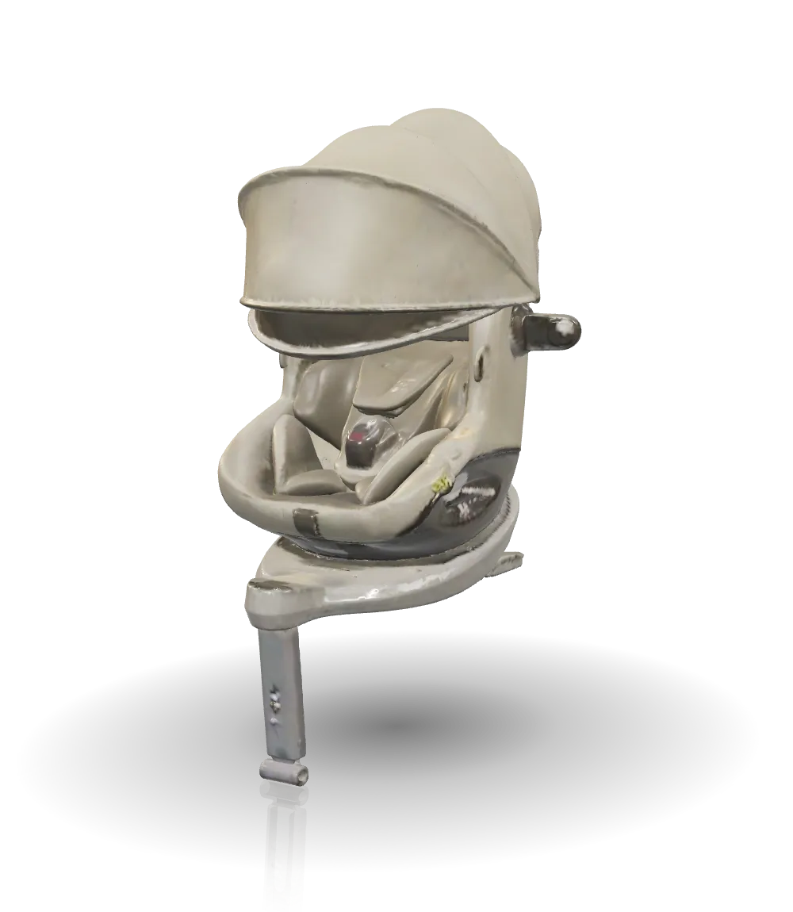
주말 나들이와 명절 귀성길. 출발하고 얼마 지나지 않아 뒷좌석에서 울음이 시작됩니다.
잠든 아이의 고개는 앞으로 떨어지고, 시트에 닿은 등은 땀으로 젖어 갑니다.
운전하는 동안에도 시선은 자꾸 백미러로 향합니다.
아이가 카시트를 힘들어하는 데에는 이유가 있습니다.
막 잠든 아이의 고개가 앞으로 떨어지고, 덜컹일 때마다 다시 깨어 웁니다.
등받이가 충분히 기울지 않으면, 잠들어 힘이 빠진 머리를 받쳐 줄 곳이 없습니다.
에어컨을 켜 두어도 휴게소에서 안아 올리면 등과 뒤통수가 축축합니다.
아이는 어른보다 체온이 높고, 몸을 감싸는 시트에 바람이 통하지 않으면 열이 그대로 머뭅니다.
운전 중에는 백미러로 아이를 살피고, 좁은 주차장에서는 허리를 숙여 아이를 비스듬히 태웁니다.
시트가 앞을 향한 채 고정되어 있으면, 문 밖에서 아이를 안은 채 몸을 비틀어야 합니다.
슬라이더를 좌우로 움직여 일반 카시트와 조이 아이스핀 360을 비교해 보세요.

등받이가 서 있으면 잠들었을 때 고개가 앞으로 떨어지기 쉽습니다
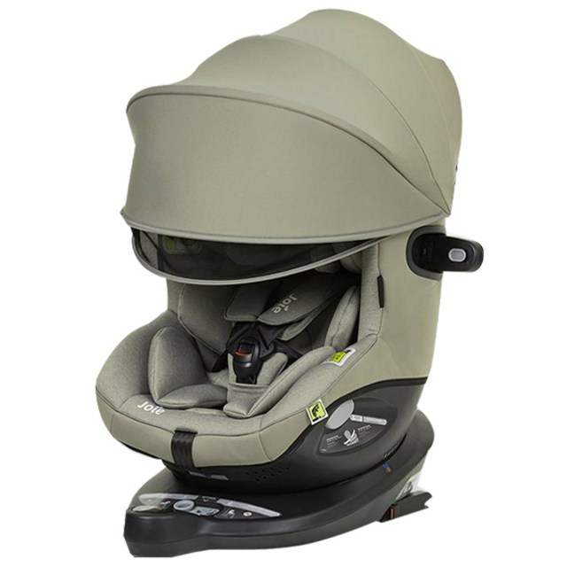
6단계 등받이와 Intelli-Fit™ 헤드레스트가 머리를 받쳐 줍니다
기능을 늘어놓기보다, 앞에서 본 문제 하나에 설계 하나씩 답합니다.
아이가 잠들면 등받이를 더 깊게 눕힙니다. 앞보기와 뒤보기 모두 6단계로 조절되는 슬리피타임 틸트(Sleepytime Tilt)가 머리 무게를 뒤로 실어 주고, Intelli-Fit™ 메모리폼을 더한 트라이 프로텍트 헤드레스트가 머리 양옆을 감싸 흔들림을 줄입니다.
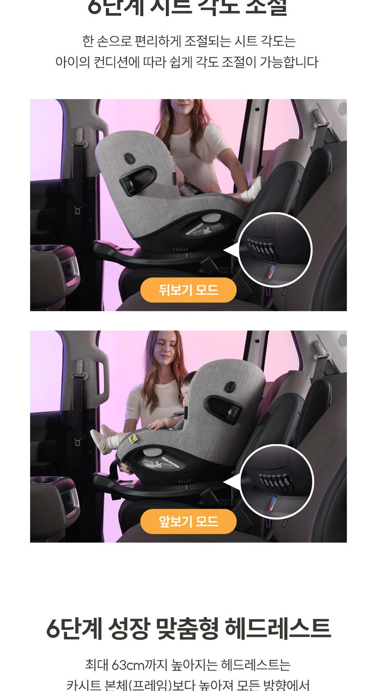
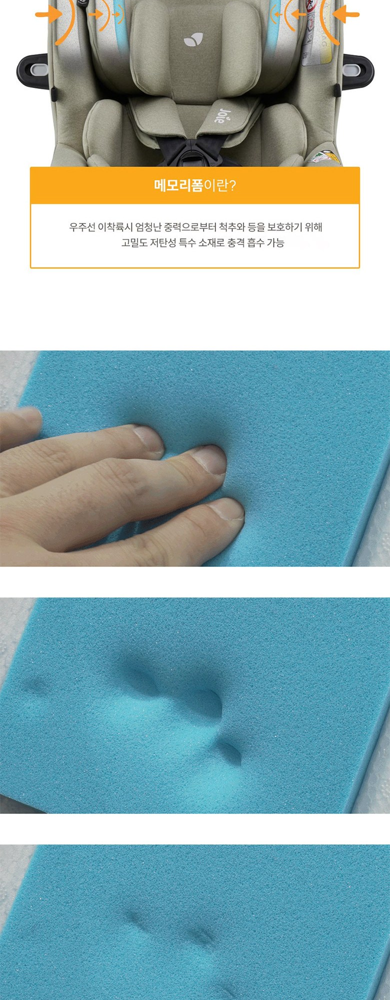
주행 중 아이가 잠들었을 때 시트를 떼지 않고 원터치로 깊은 수면 각도를 확보하는 전용 설계
공식 상세페이지 기술 설명서“긴 주행에서도 아이가 고개를 기댄 채 잠을 이어 갑니다.”
시트 쉘 측면에 공기가 드나드는 에어 벤틸레이션을 두고, 등과 닿는 면에는 메쉬 패브릭을 썼습니다. 차 안의 에어컨 바람이 아이 등 뒤까지 돌 수 있는 길을 만든 구조입니다.
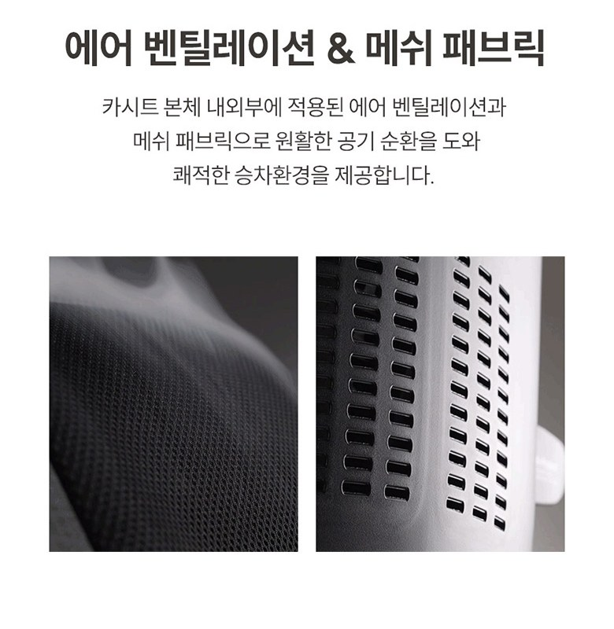
차량 에어컨 냉기가 쉘 측면 홀로 유입되어 등판 메쉬 패브릭 사이로 순환하면서, 갇히기 쉬운 아이의 체온과 습기를 실시간으로 배출합니다.
“휴게소에서 안아 올렸을 때, 등이 한결 덜 답답합니다.”
시트 양옆, 손이 자연스럽게 닿는 높이에 있는 심플 스위블(Simple Swivel™) 레버를 당기면 시트가 360° 돌아 문 쪽을 향합니다. 아이를 정면에서 안아 앉히고, 양옆의 마그네틱 벨트 홀더가 벨트를 열어 두어 아이 몸 아래에 벨트가 깔리지 않습니다. 앉힌 뒤 다시 돌리면 뒤보기 자세로 고정됩니다.
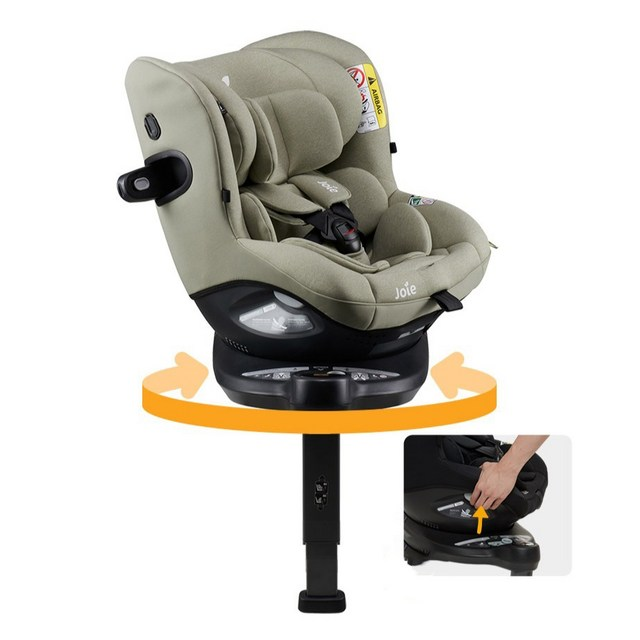
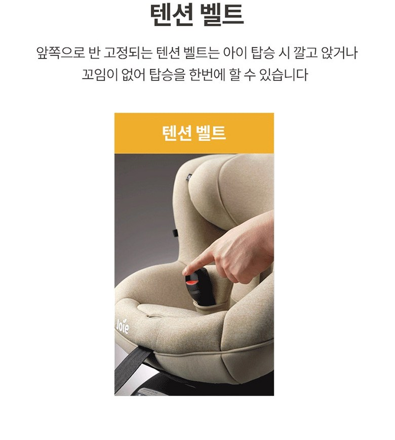
베이스와 서포트 레그는 차에 고정된 채, 위의 시트만 세로축을 따라 360° 돌고 뒤로 눕습니다.
시트 뒤쪽 아래를 축으로 앞이 들리며 뒤로 눕습니다.
구조와 움직임을 설명하기 위한 단순화 모델입니다. 실제 제품의 형태, 크기, 등받이 각도와는 다를 수 있습니다.
“허리를 비틀지 않고 아이를 태우고, 출발한 뒤에는 운전에 집중합니다.”
편안함은 매일 느끼지만, 안전은 한 번의 순간에 결정됩니다.
그래서 숫자로 확인할 수 있어야 합니다.
벨트를 조이면 시트 양옆의 측면 보호대가 자동으로 펼쳐져, 옆에서 오는 충격에 가장 먼저 닿아 흡수합니다.
충돌 시 머리와 목을 등받이 전체로 받쳐 주는 뒤보기 자세를 체중 19kg(약 5세 전후)까지 유지할 수 있습니다. (제조사 발표 기준)
15개월이 되기 전에는 시트를 앞보기로 고정할 수 없도록 잠금 장치가 막아 줍니다. 가족 중 누가 태워도 안전 기준이 지켜집니다.
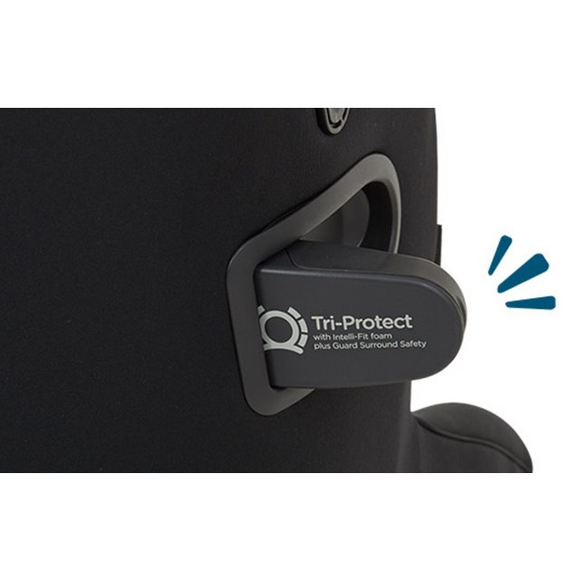
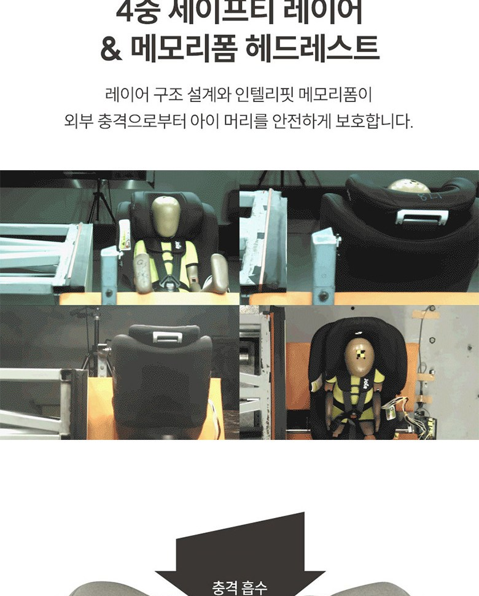
“숫자로 확인한 안전 위에서, 매일의 외출을 시작합니다.”
“바구니 카시트에선 울던 생후 40일 아이가, 헤드쿠션이 양옆을 잡아 주니 울음을 그치고 출발 5분 만에 잠들었어요.”
“명절 귀성길, 차만 타면 보채던 100일 아기가 2시간 내내 깨지 않고 자서 휴게소를 그냥 지나쳤어요.”
후기는 실제 게시물의 내용을 짧게 다듬어 옮긴 것이며, 아이마다 경험은 다를 수 있습니다.
좋은 점만큼 아쉬운 점도 함께 적었습니다.
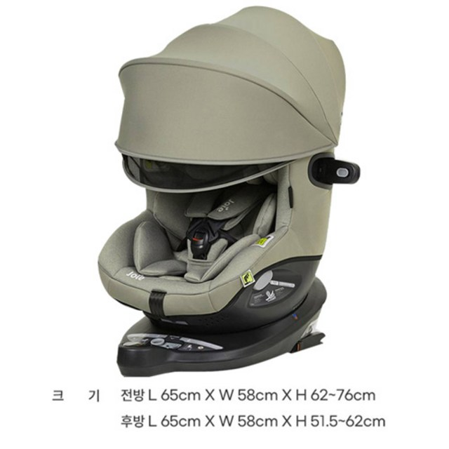
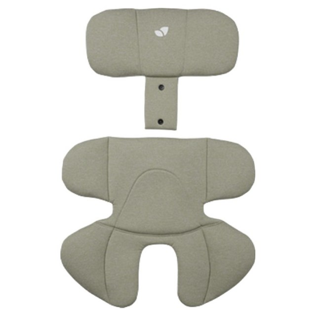
ISOFIX 고정 장치가 있는 차량이라면 장착할 수 있습니다.
크기는 뒤보기 기준 길이 65 × 폭 58 × 높이 51.5~62cm, 앞보기 기준 높이 62~76cm이며, 서포트 레그로 바닥 높이에 맞춰 고정합니다.
15개월이 지난 뒤부터 앞보기로 돌릴 수 있고, 그 전에는 잠금 장치가 앞보기 고정을 막아 줍니다. 가능하다면 안전을 위해 뒤보기를 오래 유지하는 것이 좋습니다.
약 13.9kg으로 가벼운 편은 아닙니다. 차에 한 번 설치해 두고 회전 기능으로 타고 내리는 제품이라, 무게를 느끼는 순간은 처음 설치할 때가 대부분입니다.
등과 닿는 면은 메쉬 패브릭이고, 시트 측면에 통풍 구조가 있어 공기가 드나듭니다.
ISOFIX로 단단히 고정되는 만큼 체결 압력으로 가죽 시트에 자국이 생길 수 있습니다. 카시트 보호 매트를 함께 쓰시길 권합니다.
다음 주말의 나들이, 다가오는 명절 귀성길. 그 길이 시작되기 전에 준비해 두세요.
이 포스팅은 쿠팡 파트너스 활동의 일환으로, 이에 따른 일정액의 수수료를 제공받습니다.
버튼을 눌러도 바로 결제되지 않습니다. 쿠팡에서 옵션과 최신 가격, 반품 조건을 먼저 확인하세요.
현재 단계는 랜딩 페이지 기획 및 구조 구현 실습 단계입니다.
다음 링크 연결 단계에서 쿠팡 실시간 가격 및 옵션 상세 페이지로 안전하게 이동됩니다.